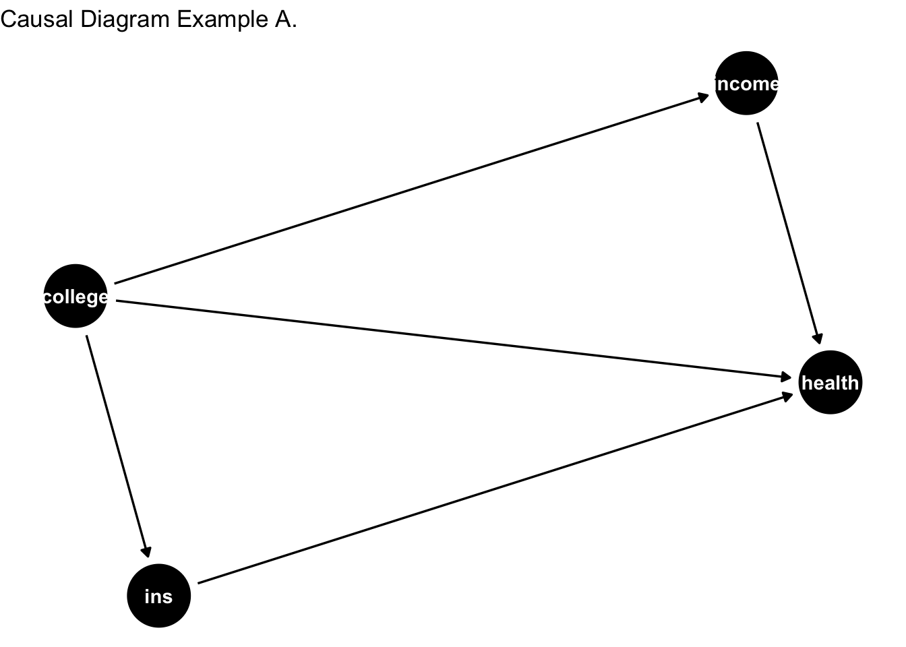
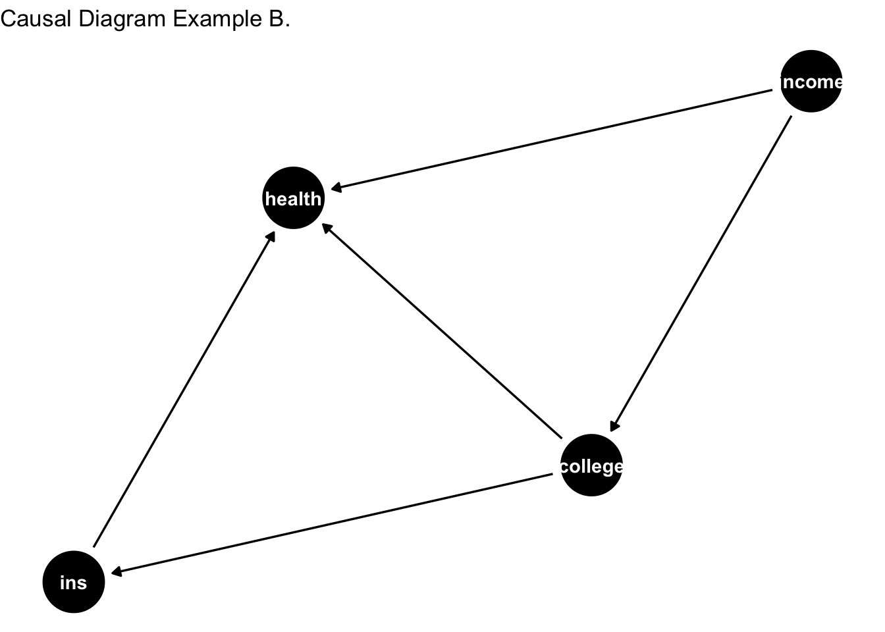
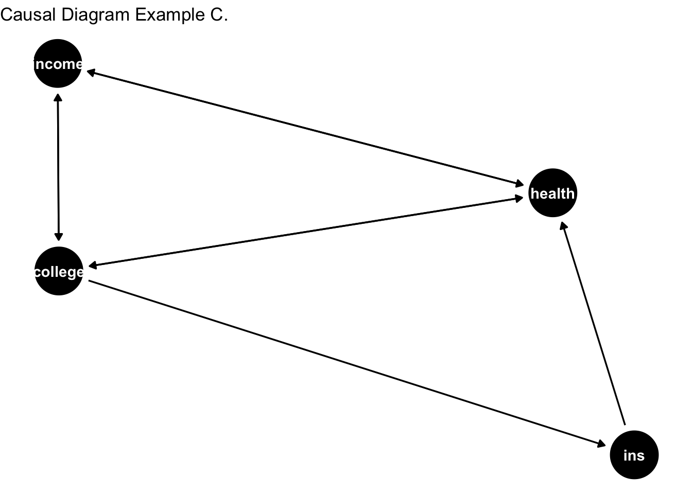
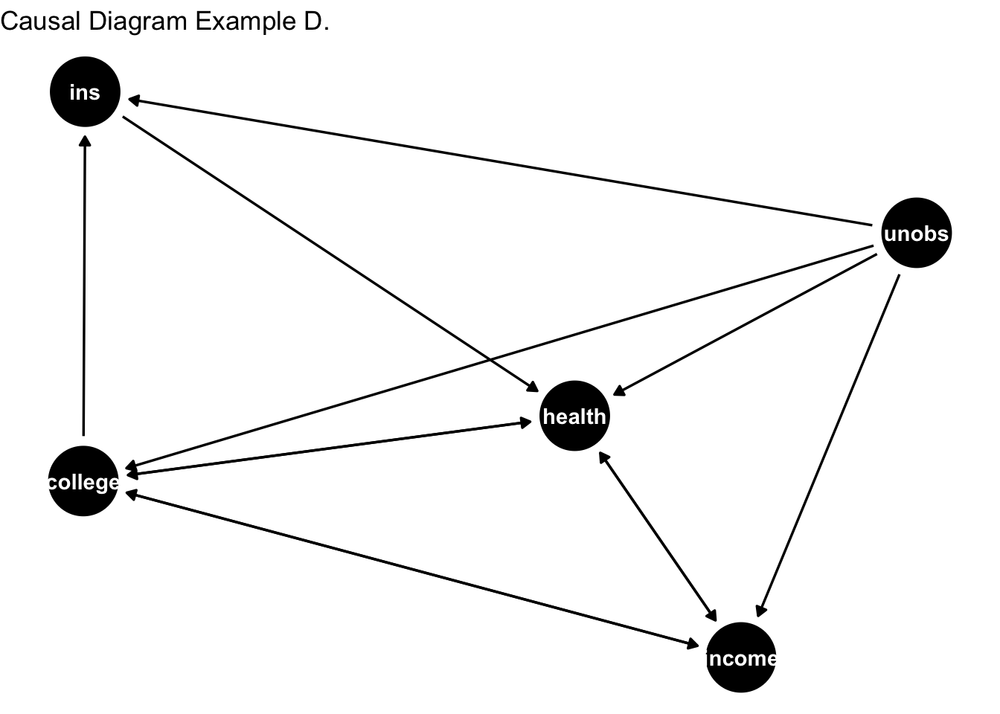

4 DAG (Directed Acyclic Graph)
A simple way to keep track of whats going on is to make use of causal diagrams. This is known as Directed Acyclic Graph (DAG) in various fields like statistics, computer science, and epidemiology. It’s mainly used to depict the relationship between variables.
I’m going to use several set of assumptions to provide illustrations depicting the relationship between variables. This will allow us to configure some concerns that obstruct inference on causality.
Here is the first causal diagram pertaining to our example.
library(dagitty) # libraries for DAG
library(ggdag)##
## Attaching package: 'ggdag'## The following object is masked from 'package:stats':
##
## filter# Define a causal diagram
dag <- dagitty("
dag {
college -> health
college -> income
college -> ins
income -> health
ins -> health
}
")
# Visualize the DAG
ggdag(dag) +
theme_minimal() +
ggtitle("Causal Diagram Example A.") + theme_void()
Consider the data-generating process (DGP) depicted above. The DGP represents the underlying set of mechanisms or laws of the universe that produce the data we observe. However, these mechanisms are not immediately apparent to us. Essentially, our goal is to uncover and understand the phenomena governing the DGP.
Note that variable of interest is college education. As shown in the causal diagram above, the arrow moves away from college education to the rest of the variables. Then the arrows from other variables point to health. Literally reading this:
College affects Health
College affects insurance status. Insurance affects health. (mechanism through how college affects health).
College affects income. Income then affects health. (another mechanism through which college affects health).
Since, we are trying to trace the causal link between college education and health, mechanisms through which college education affects health are good. These are the ``good pathways” and we don’t need to be concerned about them.
However, I’d argue that the DAG in example A misrepresents the DGP. Let’s consider a slightly better scenario. Here, we allow income to cause health.
# Define a causal diagram
dag <- dagitty("
dag {
college -> health
income -> college
college -> ins
income -> health
ins -> health
}
")
# Visualize the DAG
ggdag(dag) +
theme_minimal() +
ggtitle("Causal Diagram Example B.") + theme_void()
Note that income causes both health and college education in the above DAG. This restricts us from identifying the cause effect of college education on health. We won’t be able to figure out whether college education leads to better health or income that is correlated with college education drives the effect.
To isolate the effect of college education on health, we would want to look at individuals with the same income and utilize the variation in college education. For example, look among individuals with income of 50,000; some will have college education and some won’t. This variation in college education can be fruitful in identification. Hence, we would want to control for income. Once we have done this, we’ve blocked the bad pathway.
I’d still argue the DAG presented above is based on unrealistic set of assumptions.
Next, we consider the following DAG with feedback loop between college, health, income and insurance status.
# Define a causal diagram
dag <- dagitty("
dag {
college -> health
college -> income
health -> income
income -> college
health -> college
college -> ins
income -> health
ins -> health
}
")
# Visualize the DAG
ggdag(dag) +
theme_minimal() +
ggtitle("Causal Diagram Example C.") + theme_void()
Note that now arrows are facing both ways for income, health, and college. We have a loop between income, health, and college. This means:
Income can affect health; health can affect income.
Income can affect college education; college can affect income.
College education can affect health; health can affect college education.
In other words, income, college, and health are jointly determined. The relationship between college and health is convoluted. To identify the relationship between college and health, we’d want to account for the unwanted channels. This means that we’d want to block out the following channels: i) income to college; ii) health to income; iii) health to college. The first two channels are arguably accounted for by controlling for income. How about the last channel?
The DAG is saying that college causes health; and health causes college education. This is the case when causality runs both ways. We call this as reverse causality.
Let’s consider another version of DAG. This is where I introduce the unobserved component. Not all of the variables governing the DGP are actually observed by the researcher. In fact, you are often limited by the data that you observe. Hence, you need to regonize the importance of variables that are in play for DAG but aren’t observed.
# Define a causal diagram
dag <- dagitty("
dag {
college -> health
college -> income
health -> income
income -> college
health -> college
college -> ins
income -> health
ins -> health
unobs -> college
unobs -> health
unobs -> ins
unobs -> income
}
")
# Visualize the DAG
ggdag(dag) +
theme_minimal() +
ggtitle("Causal Diagram Example D.") + theme_void()
Among the all of the DAGs presented in this second, the last DAG perhaps most closely represent the DGP. However, there are two limitations here. First, is the limitation arising from data. You just don’t have data for unobserved variables. These variables actually belong to the data generation, but since you don;t have them, you cannot control for them. This leads to omitted variable bias in your inference. Second is the reverse causality problem – as discussed previously, the effect runs borth from health to college and college to health. This is like saying that better health can influence your education, and your education can also influence health.
Much of causal inference is about alleviating the concerns of omitted varables and reverse causality.